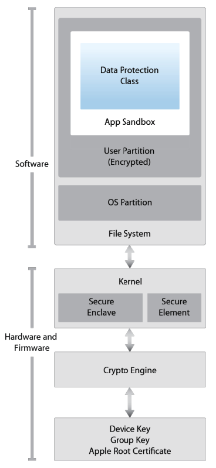
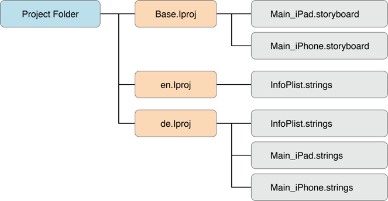

iOS Platform Overview¶
iOS is a mobile operating system that powers Apple mobile devices, including the iPhone, iPad, and iPod Touch. It is also the basis for Apple tvOS, which inherits many functionalities from iOS. This section introduces the iOS platform from an architecture point of view. The following five key areas are discussed:
- iOS security architecture
- iOS application structure
- Inter-process Communication (IPC)
- iOS application publishing
- iOS Application Attack Surface
Like the Apple desktop operating system macOS (formerly OS X), iOS is based on Darwin, an open source Unix operating system developed by Apple. Darwin's kernel is XNU ("X is Not Unix"), a hybrid kernel that combines components of the Mach and FreeBSD kernels.
However, iOS apps run in a more restricted environment than their desktop counterparts do. iOS apps are isolated from each other at the file system level and are significantly limited in terms of system API access.
To protect users from malicious applications, Apple restricts and controls access to the apps that are allowed to run on iOS devices. Apple's App Store is the only official application distribution platform. There developers can offer their apps and consumers can buy, download, and install apps. This distribution style differs from Android, which supports several app stores and sideloading (installing an app on your iOS device without using the official App Store). In iOS, sideloading typically refers to the app installation method via USB, although there are other enterprise iOS app distribution methods that do not use the App Store under the Apple Developer Enterprise Program.
In the past, sideloading was possible only with a jailbreak or complicated workarounds. With iOS 9 or higher, it is possible to sideload via Xcode.
iOS apps are isolated from each other via Apple's iOS sandbox (historically called Seatbelt), a mandatory access control (MAC) mechanism describing the resources an app can and can't access. Compared to Android's extensive Binder IPC facilities, iOS offers very few IPC (Inter Process Communication) options, minimizing the potential attack surface.
Uniform hardware and tight hardware/software integration create another security advantage. Every iOS device offers security features, such as secure boot, hardware-backed Keychain, and file system encryption (referred as data protection in iOS). iOS updates are usually quickly rolled out to a large percentage of users, decreasing the need to support older, unprotected iOS versions.
In spite of the numerous strengths of iOS, iOS app developers still need to worry about security. Data protection, Keychain, Touch ID/Face ID authentication, and network security still leave a large margin for errors. In the following chapters, we describe iOS security architecture, explain a basic security testing methodology, and provide reverse engineering how-tos.
iOS Security Architecture¶
The iOS security architecture, officially documented by Apple in the iOS Security Guide, consists of six core features. This security guide is updated by Apple for each major iOS version:
- Hardware Security
- Secure Boot
- Code Signing
- Sandbox
- Encryption and Data Protection
- General Exploit Mitigations

Hardware Security¶
The iOS security architecture makes good use of hardware-based security features that enhance overall performance. Each iOS device comes with two built-in Advanced Encryption Standard (AES) 256-bit keys. The device’s unique IDs (UIDs) and a device group IDs (GIDs) are AES 256-bit keys fused (UID) or compiled (GID) into the Application Processor (AP) and Secure Enclave Processor (SEP) during manufacturing. There's no direct way to read these keys with software or debugging interfaces such as JTAG. Encryption and decryption operations are performed by hardware AES crypto-engines that have exclusive access to these keys.
The GID is a value shared by all processors in a class of devices used to prevent tampering with firmware files and other cryptographic tasks not directly related to the user's private data. UIDs, which are unique to each device, are used to protect the key hierarchy that's used for device-level file system encryption. Because UIDs aren't recorded during manufacturing, not even Apple can restore the file encryption keys for a particular device.
To allow secure deletion of sensitive data on flash memory, iOS devices include a feature called Effaceable Storage. This feature provides direct low-level access to the storage technology, making it possible to securely erase selected blocks.
Secure Boot¶
When an iOS device is powered on, it reads the initial instructions from the read-only memory known as Boot ROM, which bootstraps the system. The Boot ROM contains immutable code and the Apple Root CA, which is etched into the silicon chip during the fabrication process, thereby creating the root of trust. Next, the Boot ROM makes sure that the LLB's (Low Level Bootloader) signature is correct, and the LLB checks that the iBoot bootloader's signature is correct too. After the signature is validated, the iBoot checks the signature of the next boot stage, which is the iOS kernel. If any of these steps fail, the boot process will terminate immediately and the device will enter recovery mode and display the restore screen. However, if the Boot ROM fails to load, the device will enter a special low-level recovery mode called Device Firmware Upgrade (DFU). This is the last resort for restoring the device to its original state. In this mode, the device will show no sign of activity; i.e., its screen won't display anything.
This entire process is called the "Secure Boot Chain". Its purpose is focused on verifying the boot process integrity, ensuring that the system and its components are written and distributed by Apple. The Secure Boot chain consists of the kernel, the bootloader, the kernel extension, and the baseband firmware.
Code Signing¶
Apple has implemented an elaborate DRM system to make sure that only Apple-approved code runs on their devices, that is, code signed by Apple. In other words, you won't be able to run any code on an iOS device that hasn't been jailbroken unless Apple explicitly allows it. End users are supposed to install apps through the official Apple's App Store only. For this reason (and others), iOS has been compared to a crystal prison.
A developer profile and an Apple-signed certificate are required to deploy and run an application. Developers need to register with Apple, join the Apple Developer Program and pay a yearly subscription to get the full range of development and deployment possibilities. There's also a free developer account that allows you to compile and deploy apps (but not distribute them in the App Store) via sideloading.

According to the Archived Apple Developer Documentation the code signature consists of three parts:
- A seal. This is a collection of checksums or hashes of the various parts of the code, created by the code signing software. The seal can be used at verification time to detect alterations.
- A digital signature. The code signing software encrypts the seal using the signer’s identity to create a digital signature. This guarantees the seal’s integrity.
- Code requirements. These are the rules governing verification of the code signature. Depending on the goals, some are inherent to the verifier, while others are specified by the signer and sealed with the rest of the code.
Learn more:
- Code Signing Guide (Archived Apple Developer Documentation)
- Code Signing (Apple Developer Documentation)
- Demystifying iOS Code Signature
Encryption and Data Protection¶
FairPlay Code Encryption is applied to apps downloaded from the App Store. FairPlay was developed as a DRM when purchasing multimedia content. Originally, FairPlay encryption was applied to MPEG and QuickTime streams, but the same basic concepts can also be applied to executable files. The basic idea is as follows: Once you register a new Apple user account, or Apple ID, a public/private key pair will be created and assigned to your account. The private key is securely stored on your device. This means that FairPlay-encrypted code can be decrypted only on devices associated with your account. Reverse FairPlay encryption is usually obtained by running the app on the device, then dumping the decrypted code from memory (see also "Basic Security Testing on iOS").
Apple has built encryption into the hardware and firmware of its iOS devices since the release of the iPhone 3GS. Every device has a dedicated hardware-based cryptographic engine that provides an implementation of the AES 256-bit encryption and the SHA-1 hashing algorithms. In addition, there's a unique identifier (UID) built into each device's hardware with an AES 256-bit key fused into the Application Processor. This UID is unique and not recorded elsewhere. At the time of writing, neither software nor firmware can directly read the UID. Because the key is burned into the silicon chip, it can't be tampered with or bypassed. Only the crypto engine can access it.
Building encryption into the physical architecture makes it a default security feature that can encrypt all data stored on an iOS device. As a result, data protection is implemented at the software level and works with the hardware and firmware encryption to provide more security.
When data protection is enabled, by simply establishing a passcode in the mobile device, each data file is associated with a specific protection class. Each class supports a different level of accessibility and protects data on the basis of when the data needs to be accessed. The encryption and decryption operations associated with each class are based on multiple key mechanisms that utilize the device's UID and passcode, a class key, a file system key, and a per-file key. The per-file key is used to encrypt the file's contents. The class key is wrapped around the per-file key and stored in the file's metadata. The file system key is used to encrypt the metadata. The UID and passcode protect the class key. This operation is invisible to users. To enable data protection, the passcode must be used when accessing the device. The passcode unlocks the device. Combined with the UID, the passcode also creates iOS encryption keys that are more resistant to hacking and brute-force attacks. Enabling data protection is the main reason for users to use passcodes on their devices.
Sandbox¶
The appsandbox is an iOS access control technology. It is enforced at the kernel level. Its purpose is limiting system and user data damage that may occur when an app is compromised.
Sandboxing has been a core security feature since the first release of iOS. All third-party apps run under the same user (mobile), and only a few system applications and services run as root (or other specific system users). Regular iOS apps are confined to a container that restricts access to the app's own files and a very limited number of system APIs. Access to all resources (such as files, network sockets, IPCs, and shared memory) are controlled by the sandbox. These restrictions work as follows [#levin]:
- The app process is restricted to its own directory (under /var/mobile/Containers/ Bundle/Application/ or /var/containers/Bundle/Application/, depending on the iOS version) via a chroot-like process.
- The
mmapandmmprotectsystem calls are modified to prevent apps from making writable memory pages executable and stopping processes from executing dynamically generated code. In combination with code signing and FairPlay, this strictly limits what code can run under specific circumstances (e.g., all code in apps distributed via the App Store is approved by Apple). - Processes are isolated from each other, even if they are owned by the same UID at the operating system level.
- Hardware drivers can't be accessed directly. Instead, they must be accessed through Apple's public frameworks.
General Exploit Mitigations¶
iOS implements address space layout randomization (ASLR) and eXecute Never (XN) bit to mitigate code execution attacks.
ASLR randomizes the memory location of the program's executable file, data, heap, and stack every time the program is executed. Because the shared libraries must be static to be accessed by multiple processes, the addresses of shared libraries are randomized every time the OS boots instead of every time the program is invoked. This makes specific function and library memory addresses hard to predict, thereby preventing attacks such as the return-to-libc attack, which involves the memory addresses of basic libc functions.
The XN mechanism allows iOS to mark selected memory segments of a process as non-executable. On iOS, the process stack and heap of user-mode processes is marked non-executable. Pages that are writable cannot be marked executable at the same time. This prevents attackers to execute machine code injected into the stack or heap.
Software Development on iOS¶
Like other platforms, Apple provides a Software Development Kit (SDK) that helps developers to develop, install, run, and test native iOS Apps. Xcode is an Integrated Development Environment (IDE) for Apple software development. iOS applications are developed in Objective-C or Swift.
Objective-C is an object-oriented programming language that adds Smalltalk-style messaging to the C programming language. It is used on macOS to develop desktop applications and on iOS to develop mobile applications. Swift is the successor of Objective-C and allows interoperability with Objective-C.
Swift was introduced with Xcode 6 in 2014.
On a non-jailbroken device, there are two ways to install an application out of the App Store:
- via Enterprise Mobile Device Management. This requires a company-wide certificate signed by Apple.
- via sideloading, i.e., by signing an app with a developer's certificate and installing it on the device via Xcode (or Cydia Impactor). A limited number of devices can be installed to with the same certificate.
Apps on iOS¶
iOS apps are distributed in IPA (iOS App Store Package) archives. The IPA file is a ZIP-compressed archive that contains all the code and resources required to execute the app.
IPA files have a built-in directory structure. The example below shows this structure at a high level:
/Payload/folder contains all the application data. We will come back to the contents of this folder in more detail./Payload/Application.appcontains the application data itself (ARM-compiled code) and associated static resources./iTunesArtworkis a 512x512 pixel PNG image used as the application's icon./iTunesMetadata.plistcontains various bits of information, including the developer's name and ID, the bundle identifier, copyright information, genre, the name of the app, release date, purchase date, etc./WatchKitSupport/WKis an example of an extension bundle. This specific bundle contains the extension delegate and the controllers for managing the interfaces and responding to user interactions on an Apple Watch.
IPA Payloads - A Closer Look¶
Let's take a closer look at the different files in the IPA container. Apple uses a relatively flat structure with few extraneous directories to save disk space and simplify file access. The top-level bundle directory contains the application's executable file and all the resources the application uses (for example, the application icon, other images, and localized content .
- MyApp: The executable file containing the compiled (unreadable) application source code.
- Application: Application icons.
- Info.plist: Configuration information, such as bundle ID, version number, and application display name.
- Launch images: Images showing the initial application interface in a specific orientation. The system uses one of the provided launch images as a temporary background until the application is fully loaded.
- MainWindow.nib: Default interface objects that are loaded when the application is launched. Other interface objects are then either loaded from other nib files or created programmatically by the application.
- Settings.bundle: Application-specific preferences to be displayed in the Settings app.
- Custom resource files: Non-localized resources are placed in the top-level directory and localized resources are placed in language-specific subdirectories of the application bundle. Resources include nib files, images, sound files, configuration files, strings files, and any other custom data files the application uses.
A language.lproj folder exists for each language that the application supports. It contains a storyboard and strings file.
- A storyboard is a visual representation of the iOS application's user interface. It shows screens and the connections between those screens.
- The strings file format consists of one or more key-value pairs and optional comments.

On a jailbroken device, you can recover the IPA for an installed iOS app using different tools that allow decrypting the main app binary and reconstruct the IPA file. Similarly, on a jailbroken device you can install the IPA file with IPA Installer. During mobile security assessments, developers often give you the IPA directly. They can send you the actual file or provide access to the development-specific distribution platform they use, e.g. TestFlight or Visual Studio App Center.
App Permissions¶
In contrast to Android apps (before Android 6.0 (API level 23)), iOS apps don't have pre-assigned permissions. Instead, the user is asked to grant permission during runtime, when the app attempts to use a sensitive API for the first time. Apps that have been granted permissions are listed in the Settings > Privacy menu, allowing the user to modify the app-specific setting. Apple calls this permission concept privacy controls.
iOS developers can't set requested permissions directly, these will be requested indirectly when accessing sensitive APIs. For example, when accessing a user's contacts, any call to CNContactStore blocks the app while the user is being asked to grant or deny access. Starting with iOS 10.0, apps must include usage description keys for the types of permissions they request and data they need to access (e.g., NSContactsUsageDescription).
The following APIs require user permission:
- Contacts
- Microphone
- Calendars
- Camera
- Reminders
- HomeKit
- Photos
- Health
- Motion activity and fitness
- Speech recognition
- Location Services
- Bluetooth sharing
- Media Library
- Social media accounts
iOS Application Attack surface¶
The iOS application attack surface consists of all components of the application, including the supportive material necessary to release the app and to support its functioning. The iOS application may be vulnerable to attack if it does not:
- Validate all input by means of IPC communication or URL schemes, see also:
- Testing Custom URL Schemes
- Validate all input by the user in input fields.
- Validate the content loaded inside a WebView, see also:
- Testing iOS WebViews
- Determining Whether Native Methods Are Exposed Through WebViews
- Securely communicate with backend servers or is susceptible to man-in-the-middle (MITM) attacks between the server and the mobile application, see also:
- Testing Network Communication
- iOS Network APIs
- Securely stores all local data, or loads untrusted data from storage, see also:
- Data Storage on iOS
- Protect itself against compromised environments, repackaging or other local attacks, see also:
- iOS Anti-Reversing Defenses